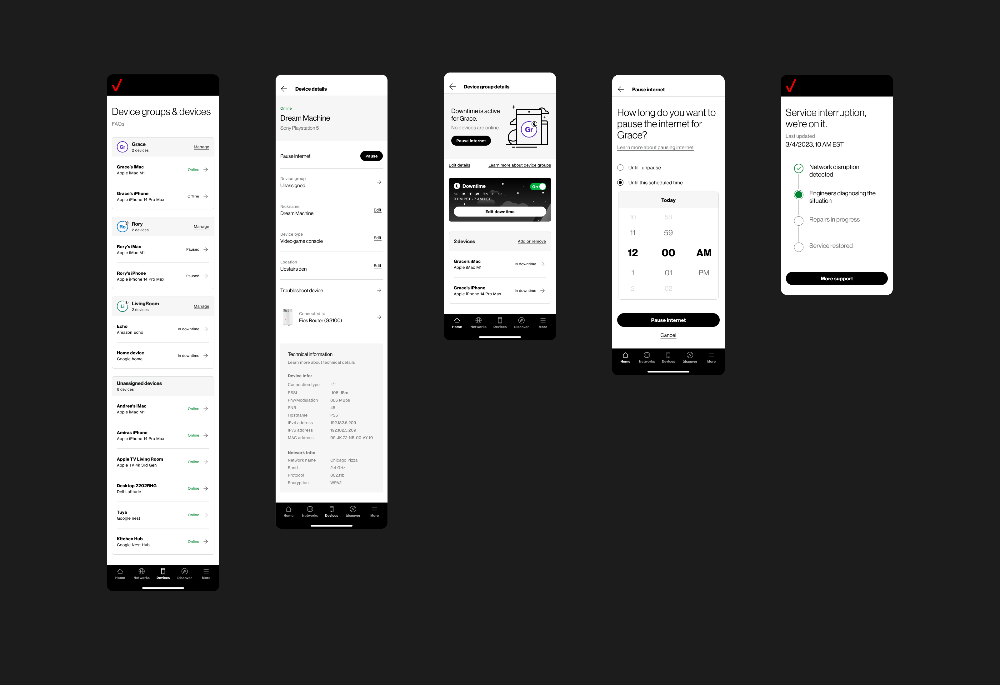

2021–2023 — Lead UX Designer
Verizon
Home App
Verizon Home Internet customers managed their network through a router manufacturer's dashboard. Non-responsive, built for IT administrators rather than the people paying the bill.
The replacement had to cover Fios, broadband, and 5G across 16 devices and 5 router models, each with different firmware and feature sets. The homepage surfaced equipment status, Wi-Fi, connected devices, guest sharing, and parental controls before scroll — plus live connection status so users could tell whether a problem was on their home network or upstream at Verizon. Keeping that readable required sustained iteration on hierarchy and labeling.
We ran 2-week sprints with features staggered: one in user testing while the next was in design. Every feature was fully annotated before handoff, with a parallel accessibility review running alongside development. Our engagement was paused before development was complete. We handed full specs and design files to Verizon's internal team.
- Client
- Verizon
- Role
- Lead UX Designer
- Platform
- iOS & Android
- App Store Rating
- 4.4 ★
